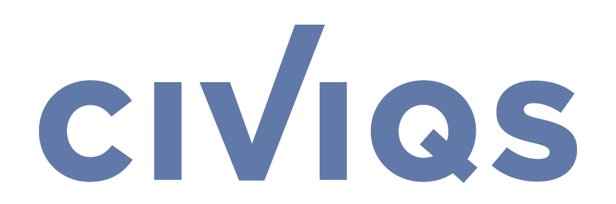
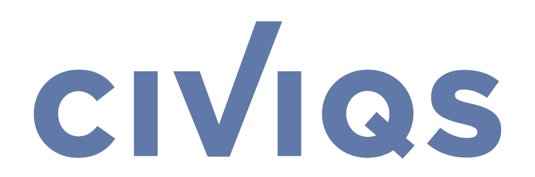

What you'll learn
- How to build and interpret Bayesian models to solve real-world problems.
- How to run and diagnose MCMC workflows for reliable, interpretable results.
- Practical skills in using PyMC to model uncertainty and understand complex systems.
- Debugging, improving, and scaling models that apply to your own work.
About this course
This hands-on, expert-led workshop from the developers of PyMC will take you from foundational Bayesian thinking to advanced modeling techniques. Designed for engineers, analysts, and scientists, this course emphasizes practical use over academic formality, helping you unlock the power of Bayesian methods in your work. At the end of this course, you'll understand how Bayesian models work and how to confidently apply them to your own data and challenges. Topics include:
- Bayesian Thinking & Model Building
- Hands-On MCMC & Inference Techniques
- Advanced Topics: Hierarchical, Causal, & Time Series Models
The workshop is delivered through 2-hour live sessions twice a week over four weeks. All sessions are recorded and available for the duration of the workshop. Students will have access to a private GitHub repository with all code examples and a dedicated Discord server for communication with instructors and fellow learners.
Who should join?
This course is ideal for software engineers, data analysts, and data scientists who want to move beyond black-box models and start building interpretable, flexible Bayesian models. No prior Bayesian experience is required, just curiosity and some Python.
Course Outline
| Date | Time (ET) | Instructor | Topic |
|---|---|---|---|
| June 2 | 11am - 1 pm |
Chris Fonnesbeck
|
Intro to Bayesian modeling and PyMC |
| June 4 | 11am - 1 pm |
Allen Downey
|
Building Models in PyMC |
| June 9 | 11am - 1 pm |
Vianey Leos Barajas
|
MCMC |
| June 11 | 11am - 1 pm |
Vianey Leos Barajas
|
Priors and Likelihood Choices |
| June 16 | 11am - 1 pm |
Vianey Leos Barajas
|
Bayesian Regression |
| June 18 | 11am - 1 pm |
Allen Downey
|
Hierarchical Models |
| June 23 | 11am - 1 pm |
Chris Fonnesbeck
|
Causal Inference Models |
| June 25 | 11am - 1 pm |
Allen Downey
|
Time Series Models |
Earn a certificate of completion
- Certificates are globally recognized & they upgrade your programming profile.
- Certificates are generated after the completion of course.
- Share your certificate with prospective employers and your professional network on LinkedIn.
Instructors
Professionals from Top Industries Learn from Us
 

What students are saying
Still Having Doubts?
If the Participant cancels the subscription, a refund of the Fee will only be provided if the cancellation is made at least 7 days prior to the start of the Workshop.
Additionally, the Participant, as a natural person, has the right to withdraw from the subscription within 14 days of registration and receive a full refund, provided that the Workshop has not yet been delivered. See our full Terms and Conditions .
Applied Bayesian Modeling Workshop
- Beginner - Intermediate
- Starts August 2
- 4 Weeks
- 8 Live Workshops
- Access to Alumni Discord Q&As
- Instructors: Chris Fonnesbeck, Vianey Leos Barajas, Allen Downey
Looking for a team offer?
Contact us at info@pymc-labs.com to get a special group rate for multiple registrations from the same company.